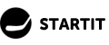
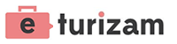

Speaking and workshops
So far, I have had the privilege to speak at eight conferences where I met a lot of creative people, got a fair number of offers for cooperation and, above all, enjoyed meeting with other lecturers and visitors.
I always try to make keynotes enriched with practical examples and first-hand advices, keeping the attention of those interested in the topic. I held training for employees in marketing agencies as well as speaking at the events with hundreds of attendees. I hope this page is "work in progress" and that I will have the opportunity to update it regularly.If you think I can be helpful at your conference, feel free to contact me.
In the paragraphs below you can read some specifics from several past conferences.
Cirbasters 3.0
One-day conference, marking anniversary of .SRB domain and discussion on the use of Cyrillic on the Internet. I sincerely appreciate the efforts and dedication of the whole team in front of RNIDS and it was my pleasure to be on the panel.
Website: RNIDS
Keynote: How to setup HREFLANG for content in Latin and Cyrillic scripts
My goal was to debunk some of the myths regarding Cyrilic script on the Internet (indexing, rankings, serving results...).
Konverzija 2017
OK, this was very serious! After a long time I was at a conference where my priority was to attend lectures of other speakers. Serious team, serious knowledge, serious tips on PPC, SEO, social media marketing, analytics. You want to make (serious) money? Go to Konverzija.

Website: Konverzija
Keynote: Long tail SEO
With the long tail SEO lecture, I have shown that there is an entire unexplored world in which you do not need a budget, in which you do not need links, in which you do not have to deal with optimization, and ultimately a world you can be extremely successful in.
SEO workshop by "Marketing zajednica"
The Facebook community launched by a group of enthusiasts today gathers over 7,000 members. Of course I agreed to hold an SEO workshop.
Website: Marketing zajednica
Workshop: SEO crash course
It is impossible to do an SEO guide in such a short time, but I have tried to open the SEO world to the audience.
SEOIT 2017
Catena Media believes in SEO. Catena Media invests in SEO. Catena Media wants to popularize SEO. SEOIT was a top-level event hosted by Catena, acompanied with local SEO colleagues. We need more of these gatherings.
Website: SEOIT conference
Keynote: Technical SEO (is not dead)
SEO is constantly changing and what we see in the last couple of years is moving away from the technical aspect of SEO to the direction of inbound and content marketing. However, is it really time to ignore mathematical models, and modern content parsing? I hope I have shown that we are far from that time!
IT Open 2014
This was the only real Internet marketing, SEO and affiliate conference in Serbia. I really enjoyed it. Kragujevac was excellent host, audience was actively involved, absolute win.
Website: IT Open
Keynote: Link building
I talked about the importance of links in the Google's universe, about how to acquire and build links. I presented over ten link building techniques, but also paid attention to the Penguin algorithm, which aims to identify artificial link profiles. A lot of questions and an excellent feedback from the audience.
E-trgovina 2014
This was the second year in a row that I was invited to speak in Palic. I used the opportunity to talk about the technical acpects of SEO and PPC campaigns for an e-commerce website.
Website: E-trgovina
Keynote: PPC for e-commerce websites
PPC is a great way to quickly reach traffic, gain competitive advantage, gather valuable data and easily adapt to the market. But what do you really need to do to make a great profit?
Keynote: SEO for e-commerce websites
Online stores generally have very bulky CMS software systems, boring, duplicated content that does not provide any value to the user. An additional problem is the Panda and Penguin updates. In the keynote I talked about how to make a "SEO-friendly" online store.
WebDan 2014
City of Bor blogging community is one of the strongest in the country, and it is no wonder they can bring a pretty strong line-up to the WebDan. It was my honor that I was even invited. Two days of great fun.
Website: WebDan
Keynote: What do Internet Marketing experts do not want you to know?
My lecture was intended to break the myths that circle around SEO and process of converting visitors to customers. Also, I was talking about finding valuable information in web analytics and why blog is one of the stronger weapons to kill competition.
E-turizam 2014
One-day conference on the practical use of the Internet in travel industry. The emphasis was popularization of online marketing in relation to the classic ways of promotion.
Website: E-turizam
Keynote: How to affordably reach domestic travelers?
By the year 2014, I already had a five-year experience in digital marketing in travel, so I easily provided a lot of advices about the consumer behavior, types of keywords that convert, remarketing etc. After the lecture, I participated in the panel where I answered the visitors' questions.
To be continued...